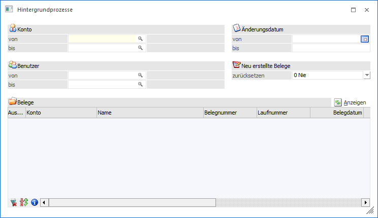
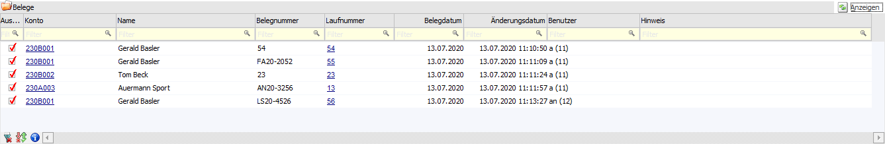
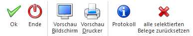

Die für den Hintergrund vorgesehenen Belege können im Programm WinLine FAKT im Menüpunkt…
1 Erfassen
1 Belegdruck
1 Hintergrundprozesse
… aufgerufen werden.

Aus diesem Menüpunkt können Belege, welche zuvor für den Hintergrunddruck vorgesehen wurden, angewählt und direkt im Hintergrund gedruckt werden. Dazu müssen in der Beleg-Tabelle die gewünschten Belege ausgewählt werden und anschließend der Button "Ok" angewählt werden. Die selektierten Belege werden anschließend im Hintergrund über den WinLine Server fertig gestellt und gedruckt.
Selektion
Ø Konto von / bis
Einschränkung der Kunden bzw. Lieferanten.
Ø Änderungsdatum von / bis
Einschränkung des Belegdatums bzw. das Datum der letzten Änderung des Belegs.
Ø Benutzer von / bis
Hier kann nach dem Benutzer eingeschränkt werden, welcher den Beleg für den Hintergrund vorgesehen hat.
Ø Neu erstellte Belege zurücksetzen
An dieser Stelle kann hinterlegt werden, wie mit neu erstellten Belege bei Anwahl des Buttons "alle selektierten Belege zurücksetzen" verfahren werden soll. Folgende Varianten stehen zur Verfügung:
ü 0 - Nie
Wenn Belege in der
Tabelle markiert werden und der Button "alle selektierten Belege zurücksetzen"
angewählt wird, werden neu erzeugte Belege, welche direkt für den
Hintergrunddruck vorgesehen wurden, nicht zurückgesetzt.
ü 1 - Immer
Neu erzeugt Beleg,
welche direkt für den Hintergrunddruck vorgesehen wurden, werden
zurückgesetzt.
Hinweis
Da der Beleg direkt für den Hintergrunddruck vorgesehen war, gibt es keinen "tatsächlich gedruckten" Ursprungsbeleg, daher werden alle Belegmittelteilszeilen gelöscht und es bleibt ein Beleg ohne Artikelzeilen über.
ü 2 - Fragen
Es erscheint für
jeden einzelnen neu erstellten Beleg, welcher direkt für den Hintergrunddruck
vorgesehen war, nochmals eine Meldung, ob dieser Beleg zurückgesetzt werden soll
oder nicht.
Tabelle "Belege"

Damit Belege, welche für den Hintergrunddruck vorgesehen sind in der Tabelle geladen werden, muss der Button "Anzeigen" angewählt werden.
Hinweise
In der Spalte "Hinweis" werden Informationen angezeigt, wenn es ein Problem beim Drucken des Belegs gab bzw. bei der Übergabe an den WinLine Server.
Die Belegkopfzeilen und Belegmittezeilen werden für im Hintergrund vorgesehenen Belege in den Tabellen T145 (Kopf) und T146 (Mitte) gespeichert. Nach erfolgreichem Druck des Belegs sind die Zeilen wie gewohnt in der T025 und T026 enthalten und werden aus den Tabellen T145 und T146 gelöscht.
Wenn eine Tabellenerweiterung auf die T025 und T026 vorhanden ist, müssen die T145 und T146 ebenfalls manuell diesbezüglich angepasst werden.
Buttons

Ø Ok
Der Belegdruck der in der Tabelle angewählten Belege wird an den WinLine Server übergeben und die Belege werden fertig gestellt bzw. gedruckt.
Ø Ende
Der Menüpunkt wird geschlossen.
Ø Vorschau Bildschirm
Die Belege, welche in der Tabelle gelistet sind, werden als Bildschirmausgabe ausgegeben.
Ø Vorschau Drucker
Die Belege, welche in der Tabelle gelistet sind, werden als Übersicht am Drucker ausgegeben.
Ø Protokoll
Es wird der Menüpunkt "Webservice - Protokoll" geöffnet. Dort können die Hintergrundprozesse und somit auch der Hintergrunddruck nachverfolgt werden, ob der Hintergrundprozess erfolgreich war oder nicht.
Ø alle selektierten Belege zurücksetzen
Alle angewählten Belege werden mit der selektierten Option "Neu erstellte Belege" zurückgesetzt.
Ø Beleginfo anzeigen
Es wird die Beleginfo zum aktuellen angewählten Beleg ausgegeben.